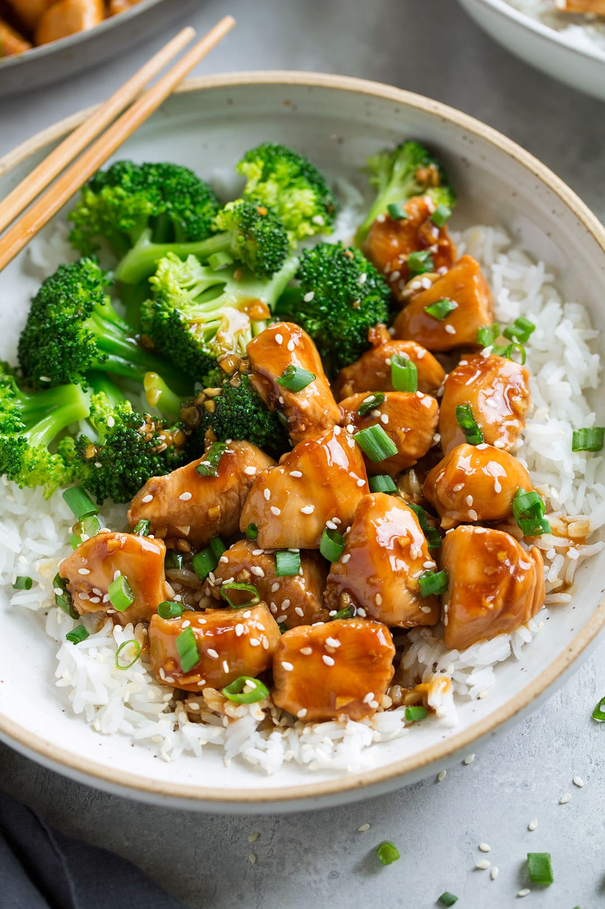

Teriyaki Chicken

Ingredients:
- Chicken Breasts
- Olive oil
- Low-sodium Soy Sauce
- Honey
- Brown Sugar
- Rice Vinegar
- Sesame Oil
- Ginger
Steps:
- Heat oil in a large non-stick skillet or wok
- Add chicken and let cook (giving space between pieces) until slightly browned on bottom then flip chicken pieces over and cook through.
- While the chicken is cooking whisk together the teriyaki sauce mixture.
- Pour sauce into the skillet once the chicken is just nearly finished cooking through and let the sauce cook and simmer until thickened.
- Easy as that! Serve it warm over brown or white rice with steamed veggies.